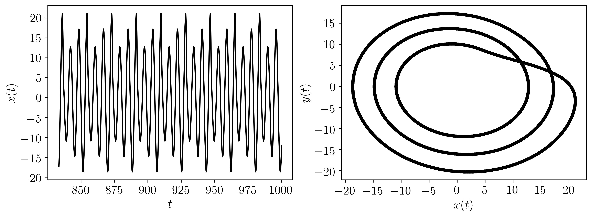

2.5.2. Dynamic Systems Library (DynSysLib)¶
This page provides a summary of the Python Dynamical Systems Library (DynSysLib) for simulating a wide variety of dynamical systems.

Figure: x-solution to simulated rossler system for a periodic response.
-
teaspoon.MakeData.DynSysLib.DynSysLib.DynamicSystems(system, dynamic_state=None, L=None, fs=None, SampleSize=None, parameters=None, InitialConditions=None, UserGuide=False)[source]¶ This function provides a library of dynamical system models to simulate with the time series as the output.
- Parameters
system (string) – either ‘periodic’ or ‘chaotic’.
- Other Parameters
dynamic_state (Optional[string]) – either ‘periodic’ or ‘chaotic’.
L (Optional[int]) – amount of time to solve simulation for.
fs (Optional[int]) – sampling rate for simulation.
SampleSize (Optional[int]) – length of sample at end of entire time series
parameters (Optional[array]) – dynamic system parameters.
InitialConditions (Optional[array]) – initial conditions for simulation.
UserGuide (Optional[bool])
- Returns
Array of the time indices as t and the simulation time series ts from the simulation for all dimensions of dynamcal system (e.g. 3 for Lorenz).
- Return type
array
Of the optional other parameters either the dynamic_state parameter or the system parameters must be used.
This function requires the following packages:
numpy
scipy
matplotlib
ddeint (delayed differential equations only)
2.5.2.1. Available Dynamical Systems¶
The following table provides a list of all the available dynamical systems as called by the system keyword:
Maps |
Autonomous Dissipative Flows |
Driven Dissipative Flows |
Conservative Flows |
Periodic Functions |
Noise Models |
Human Data |
Delayed Flows |
|---|---|---|---|---|---|---|---|
logistic_map |
chua |
driven_pendulum |
driven_can_der_pol_oscillator |
sine |
gaussian_noise |
ECG |
mackey_glass |
henon_map |
lorenz |
shaw_van_der_pol_oscillator |
simplest_driven_chaotic_flow |
incommensurate_sine |
uniform_noise |
EEG |
|
logistic_map |
rossler |
forced_brusselator |
nose_hoover_oscillator |
rayleigh_noise |
|||
sine_map |
coupled_lorenz_rossler |
ueda_oscillator |
labyrinth_chaos |
exponential_noise |
|||
tent_map |
coupled_rossler_rossler |
duffings_two_well_oscillator |
henon_heiles_system |
||||
linear_congruential_generator_map |
double_pendulum |
duffing_van_der_pol_oscillator |
|||||
rickers_population_map |
diffusionless_lorenz_attractor |
rayleigh_duffing_oscillator |
|||||
gauss_map |
complex_butterfly |
||||||
cusp_map |
chens_system |
||||||
pinchers_map |
hadley_circulation |
||||||
sine_circle_map |
ACT_attractor |
||||||
lozi_map |
rabinovich_frabrikant_attractor |
||||||
delayed_logstic_map |
linear_feedback_rigid_body_motion_system |
||||||
tinkerbell_map |
moore_spiegel_oscillator |
||||||
burgers_map |
thomas_cyclically_symmetric_attractor |
||||||
holmes_cubic_map |
halvorsens_cyclically_symmetric_attractor |
||||||
kaplan_yorke_map |
burke_shaw_attractor |
||||||
rucklidge_attractor |
|||||||
WINDMI |
|||||||
simplest_quadratic_chaotic_flow |
|||||||
simplest_cubic_chaotic_flow |
|||||||
simplest_piecewise_linear_chaotic_flow |
|||||||
double_scroll |
2.5.2.2. Examples¶
The following is an example implementing the minimum amount of needed:
import matplotlib.pyplot as plt
import matplotlib.gridspec as gridspec
import DynSysLib as DSL
system = 'rossler'
dynamic_state = 'periodic'
t, ts = DSL.DynamicSystems(system, dynamic_state)
TextSize = 15
plt.figure(figsize = (12,4))
gs = gridspec.GridSpec(1,2)
ax = plt.subplot(gs[0, 0])
plt.xticks(size = TextSize)
plt.yticks(size = TextSize)
plt.ylabel(r'$x(t)$', size = TextSize)
plt.xlabel(r'$t$', size = TextSize)
plt.plot(t,ts[0], 'k')
ax = plt.subplot(gs[0, 1])
plt.plot(ts[0], ts[1],'k.')
plt.plot(ts[0], ts[1],'k', alpha = 0.25)
plt.xticks(size = TextSize)
plt.yticks(size = TextSize)
plt.xlabel(r'$x(t)$', size = TextSize)
plt.ylabel(r'$y(t)$', size = TextSize)
plt.show()
Where the output for this example is:
The following is another example implementing all of the possible inputs (dynamic_state is not needed when parameters are provided):
import matplotlib.pyplot as plt
import matplotlib.gridspec as gridspec
import DynSysLib as DSL
system = 'rossler'
UserGuide = True
L, fs, SampleSize = 1000, 20, 2000
# the length (in seconds) of the time series, the sample rate, and the sample size of the time series of the simulated system.
parameters = [0.1, 0.2, 13.0] # these are the a, b, and c parameters from the Rossler system model.
InitialConditions = [1.0, 0.0, 0.0] # [x_0, y_0, x_0]
t, ts = DSL.DynamicSystems(system, dynamic_state, L, fs, SampleSize, parameters, InitialConditions, UserGuide)
TextSize = 15
plt.figure(figsize = (12,4))
gs = gridspec.GridSpec(1,2)
ax = plt.subplot(gs[0, 0])
plt.xticks(size = TextSize)
plt.yticks(size = TextSize)
plt.ylabel(r'$x(t)$', size = TextSize)
plt.xlabel(r'$t$', size = TextSize)
plt.plot(t,ts[0], 'k')
ax = plt.subplot(gs[0, 1])
plt.plot(ts[0], ts[1],'k.')
plt.plot(ts[0], ts[1],'k', alpha = 0.25)
plt.xticks(size = TextSize)
plt.yticks(size = TextSize)
plt.xlabel(r'$x(t)$', size = TextSize)
plt.ylabel(r'$y(t)$', size = TextSize)
plt.show()
Where the output for this example is:

Additionally, the user guide was prompted by setting UserGuide = True, which provides some simple instructions and a list of all the current systems:
----------------------------------------User Guide----------------------------------------------
This code outputs a time array t and a list time series for each variable of the dynamic system.
The user is only required to enter the system (see list below) as a string and
the dynamic state as either periodic or chaotic as a string.
The user also has the optional inputs as the time series length in seconds (L),
the sampling rate (fs), and the sample size (SampleSize).
If the user does not supply these values, they are defaulted to preset values.
Other optional inputs are parameters and InitialConditions. The parameters variable
needs to be entered as a list or array and are the dynamic system parameters.
If the correct number of parameters is not provided it will default to preset parameters.
The InitialConditions variable is also a list or array and is the initial conditions of the system.
The length of the initial conditions also need to match the system being analyzed.
List of the dynamic systems available:
___________________
Maps:
-------------------
1 : logistic_map
2 : henon_map
3 : sine_map
4 : tent_map
5 : linear_congruential_generator_map
6 : rickers_population_map
7 : gauss_map
8 : cusp_map
9 : pinchers_map
10 : sine_circle_map
11 : lozi_map
12 : delayed_logstic_map
13 : tinkerbell_map
14 : burgers_map
15 : holmes_cubic_map
16 : kaplan_yorke_map
___________________
___________________
Autonomous Dissipative Flows:
-------------------
1 : chua
2 : lorenz
3 : rossler
4 : coupled_lorenz_rossler
5 : coupled_rossler_rossler
6 : double_pendulum
7 : diffusionless_lorenz_attractor
8 : complex_butterfly
9 : chens_system
10 : hadley_circulation
11 : ACT_attractor
12 : rabinovich_frabrikant_attractor
13 : linear_feedback_rigid_body_motion_system
14 : moore_spiegel_oscillator
15 : thomas_cyclically_symmetric_attractor
16 : halvorsens_cyclically_symmetric_attractor
17 : burke_shaw_attractor
18 : rucklidge_attractor
19 : WINDMI
20 : simplest_quadratic_chaotic_flow
21 : simplest_cubic_chaotic_flow
22 : simplest_piecewise_linear_chaotic_flow
23 : double_scroll
___________________
___________________
Driven Dissipative Flows:
-------------------
1 : driven_pendulum
2 : driven_can_der_pol_oscillator
3 : shaw_van_der_pol_oscillator
4 : forced_brusselator
5 : ueda_oscillator
6 : duffings_two_well_oscillator
7 : duffing_van_der_pol_oscillator
8 : rayleigh_duffing_oscillator
___________________
___________________
Conservative Flows:
-------------------
1 : simplest_driven_chaotic_flow
2 : nose_hoover_oscillator
3 : labyrinth_chaos
4 : henon_heiles_system
___________________
___________________
Periodic Functions:
-------------------
1 : sine
2 : incommensurate_sine
___________________
___________________
Noise Models:
-------------------
1 : gaussian_noise
2 : uniform_noise
3 : rayleigh_noise
4 : exponential_noise
___________________
___________________
Human Data:
-------------------
1 : ECG
2 : EEG
___________________
___________________
Delayed Flows:
-------------------
1 : mackey_glass
___________________
------------------------------------------------------------------------------------------------